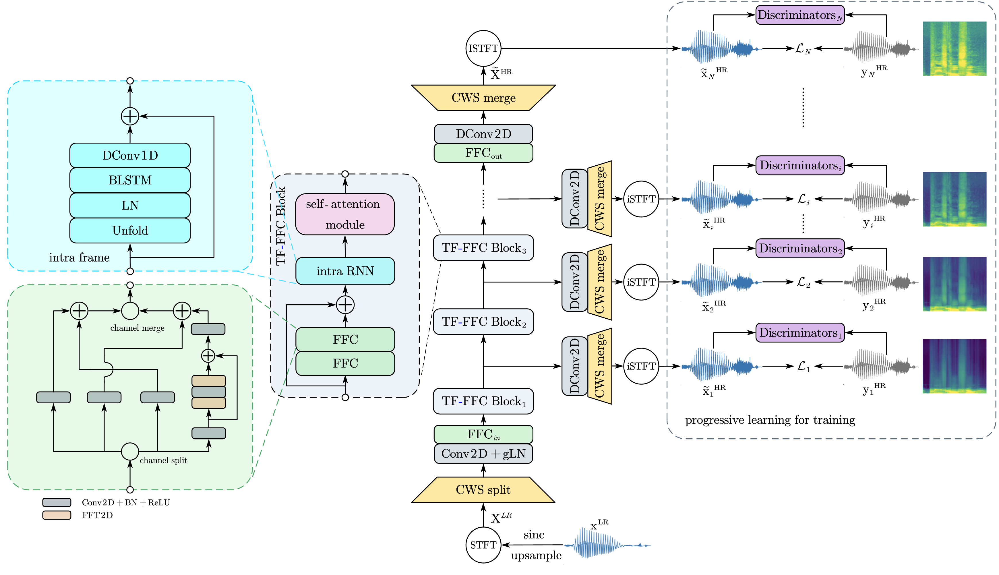
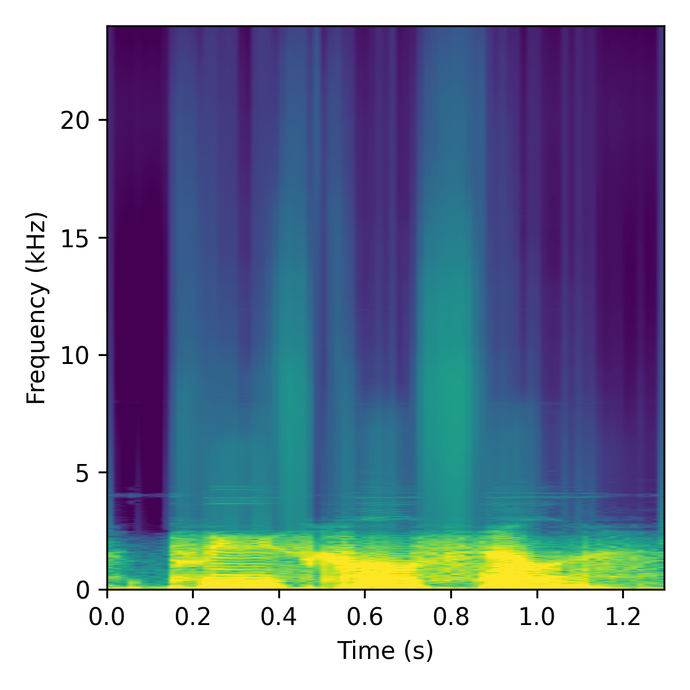
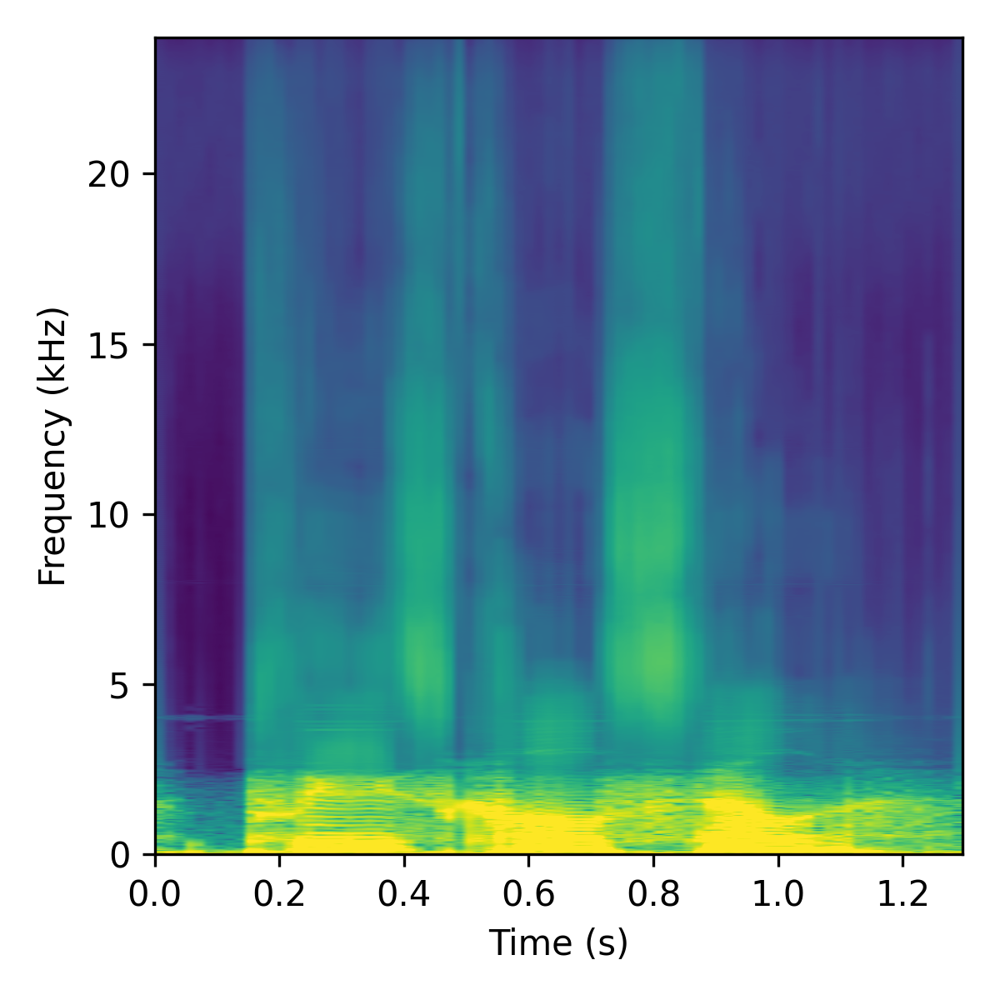
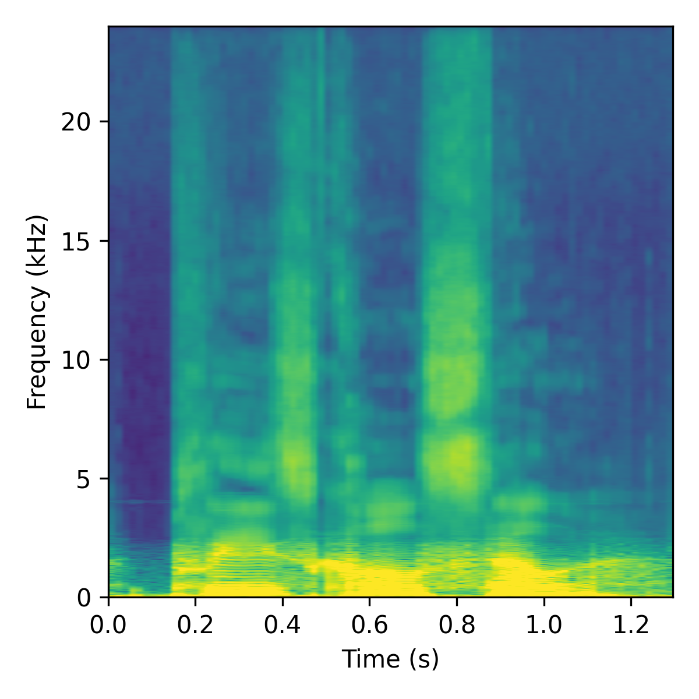
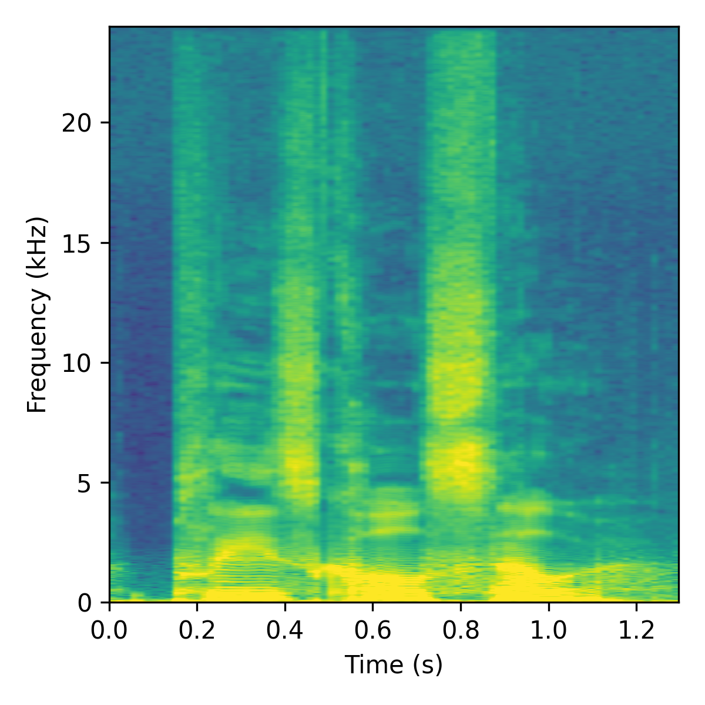
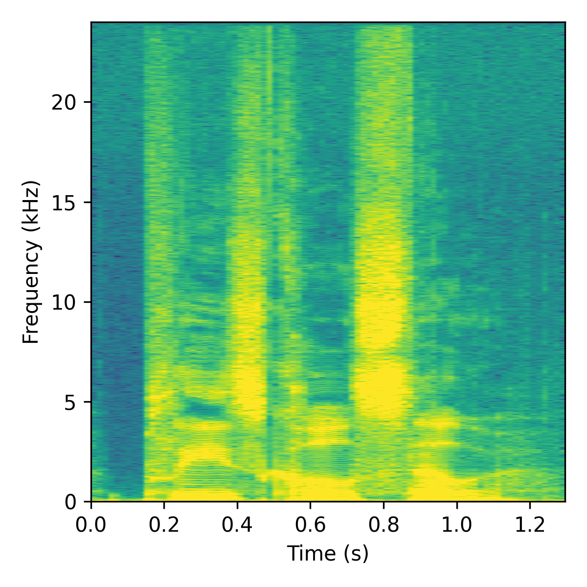

Speech bandwidth extension (BWE) aims to reconstruct high-fidelity wideband audio from narrowband inputs. While recent approaches have made significant progress, they often struggle to reconstruct realistic high-frequency phase and harmonic structures, leading to perceptual artifacts. In this paper, we propose FSC-Net (Full-Spectrum Context Network), a parameter-efficient architecture designed to explicitly model cross-band harmonic dependencies.
By integrating Fast Fourier Convolutions (FFCs) into a complex spectral mapping framework, FSC-Net expands its receptive field to the entire spectrum, capturing long-range frequency interactions effectively. To address the ill-posed nature of high-frequency generation, our novel frequency-progressive learning curriculum guides the network to reconstruct spectral details from coarse to fine. Experimental results on the VCTK and unseen EARS datasets demonstrate that FSC-Net delivers consistently strong reconstruction quality and generalization, particularly in the challenging VCTK 4 kHz-to-48 kHz task.
Keywords: speech bandwidth extension, generative adversarial network, progressive learning, audio super-resolution

High-frequency reconstruction is difficult because many plausible details can match the same narrow-band input. When a model is asked to predict all fine structures at once, it may create sharp but unstable patterns that sound metallic or artificially tonal. Our progressive learning strategy avoids this by turning the task into a coarse-to-fine reconstruction process.
The figure below shows the key idea. Each image is an intermediate spectral target used to supervise one stage of the network. The target starts very smooth, capturing only the broad high-frequency envelope, and then gradually becomes sharper. This gives early blocks a simpler objective and lets deeper blocks focus on precise harmonic details.





With W = 257, the target suppresses narrow local fluctuations and emphasizes the overall spectral shape. This is useful at the beginning of the network, where the model should learn where high-frequency energy should broadly appear. As the window becomes smaller, the supervision preserves more frequency-local structure: first rough harmonic bands, then sharper ridges, and finally the exact clean target.
In practice, this means the network does not have to hallucinate the full high-frequency spectrum in one jump. It first learns a stable residual pattern, then refines that pattern stage by stage. The final stage uses W = 1, so the progressive target becomes the original clean high-resolution magnitude spectrogram.